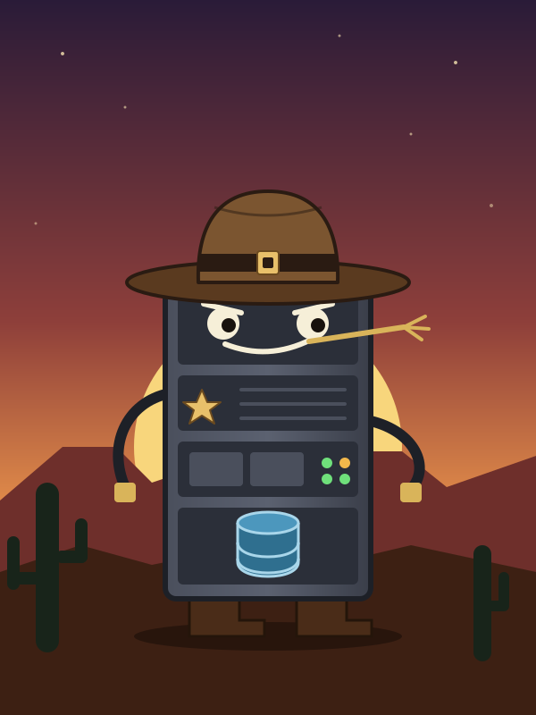

Education
Education details appear when JavaScript is on.

Traveler's Journal
The story, skills, and work of a digital traveler are kept here.
Personal content needs JavaScript. Turn it on to open the full journal.
Gear & Skills
The tools I carry on every job, from raw data to a running service.
Skill inventoryDetails
The skill list appears when JavaScript is on.
Wanted Board
Projects and services I have built.
Project posters appear when JavaScript is on.
Choose “Flip poster” to read the story behind each project.
The Trail So Far
Every stop left something to carry forward.
- Experience entries appear when JavaScript is on.
Contact Me
Have an idea for the next journey? Let's talk.
Dusty TrailElectronic mail
Written in good faith